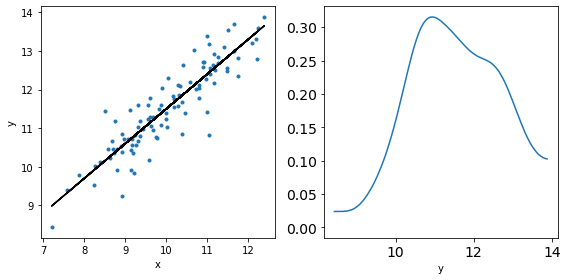
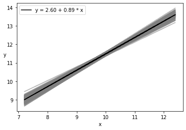
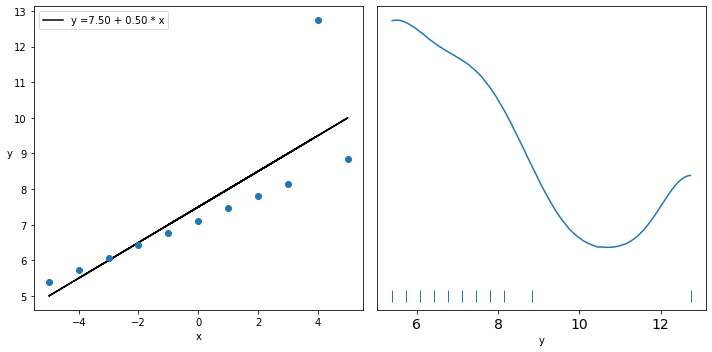
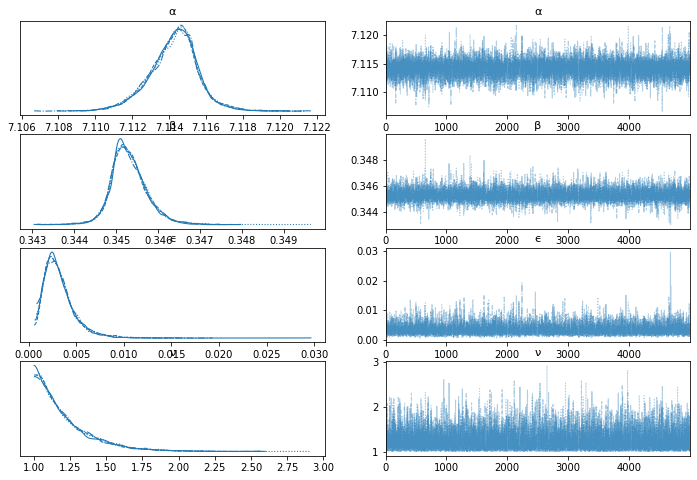
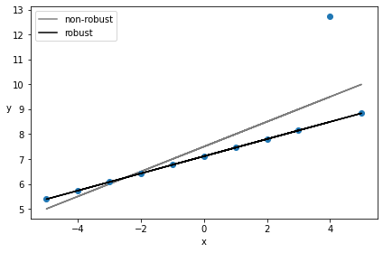

Bayesian Linear Regression
Contents
Bayesian Linear Regression#
import numpy as np
import matplotlib.pyplot as plt
import arviz as az
Exercise: Simple Linear Regression#
np.random.seed(123)
N = 100
x = np.random.normal(10,1,N)
print('x', x)
eps = np.random.normal(0,0.5,size=N)
alpha_real = 2.5
beta_real = 0.9
y_real = alpha_real + beta_real*x
y = y_real + eps
x [ 8.9143694 10.99734545 10.2829785 8.49370529 9.42139975 11.65143654
7.57332076 9.57108737 11.26593626 9.1332596 9.32111385 9.90529103
11.49138963 9.361098 9.55601804 9.56564872 12.20593008 12.18678609
11.0040539 10.3861864 10.73736858 11.49073203 9.06416613 11.17582904
8.74611933 9.3622485 10.9071052 8.5713193 9.85993128 9.1382451
9.74438063 7.20141089 8.2284669 9.30012277 10.92746243 9.82636432
10.00284592 10.68822271 9.12046366 10.28362732 9.19463348 8.27233051
9.60910021 10.57380586 10.33858905 9.98816951 12.39236527 10.41291216
10.97873601 12.23814334 8.70591468 8.96121179 11.74371223 9.20193726
10.02968323 11.06931597 10.89070639 11.75488618 11.49564414 11.06939267
9.22729129 10.79486267 10.31427199 8.67373454 11.41729905 10.80723653
10.04549008 9.76690794 8.80169886 10.19952407 10.46843912 9.16884502
11.16220405 8.90279695 7.87689965 11.03972709 9.59663396 9.87397041
9.16248328 8.39403724 11.25523737 9.31113102 11.66095249 10.80730819
9.68524185 8.9140976 9.26753801 8.78747687 12.08711336 10.16444123
11.15020554 8.73264795 10.18103513 11.17786194 9.66498924 11.03111446
8.91543209 8.63652846 10.37940061 9.62082357]
_, ax = plt.subplots(1,2,figsize=(8,4))
ax[0].plot(x,y,'C0.')
ax[0].set_xlabel('x')
ax[0].set_ylabel('y')
ax[0].plot(x,y_real,'k')
az.plot_kde(y,ax=ax[1])
ax[1].set_xlabel('y')
plt.tight_layout()

#!pip install pymc3
import pymc3 as pm
with pm.Model() as model_g:
α = pm.Normal('α', mu=0, sd=10)
β = pm.Normal('β', mu=0, sd=1)
ϵ = pm.HalfCauchy('ϵ', 5)
μ = pm.Deterministic('μ', α + β * x)
y_pred = pm.Normal('y_pred', mu=α + β * x, sd=ϵ, observed=y)
trace_g = pm.sample(2000, tune=1000, return_inferencedata=True)
Auto-assigning NUTS sampler...
Initializing NUTS using jitter+adapt_diag...
Multiprocess sampling (4 chains in 4 jobs)
NUTS: [ϵ, β, α]
100.00% [12000/12000 00:03<00:00 Sampling 4 chains, 0 divergences]
/Users/cfanelli/Desktop/teaching/BRDS/jupynb_env_new/lib/python3.9/site-packages/scipy/stats/_continuous_distns.py:624: RuntimeWarning: overflow encountered in _beta_ppf
return _boost._beta_ppf(q, a, b)
/Users/cfanelli/Desktop/teaching/BRDS/jupynb_env_new/lib/python3.9/site-packages/scipy/stats/_continuous_distns.py:624: RuntimeWarning: overflow encountered in _beta_ppf
return _boost._beta_ppf(q, a, b)
/Users/cfanelli/Desktop/teaching/BRDS/jupynb_env_new/lib/python3.9/site-packages/scipy/stats/_continuous_distns.py:624: RuntimeWarning: overflow encountered in _beta_ppf
return _boost._beta_ppf(q, a, b)
/Users/cfanelli/Desktop/teaching/BRDS/jupynb_env_new/lib/python3.9/site-packages/scipy/stats/_continuous_distns.py:624: RuntimeWarning: overflow encountered in _beta_ppf
return _boost._beta_ppf(q, a, b)
Sampling 4 chains for 1_000 tune and 2_000 draw iterations (4_000 + 8_000 draws total) took 9 seconds.
az.plot_trace(trace_g, var_names=['α', 'β', 'ϵ'])
array([[<AxesSubplot:title={'center':'α'}>,
<AxesSubplot:title={'center':'α'}>],
[<AxesSubplot:title={'center':'β'}>,
<AxesSubplot:title={'center':'β'}>],
[<AxesSubplot:title={'center':'ϵ'}>,
<AxesSubplot:title={'center':'ϵ'}>]], dtype=object)
az.summary(trace_g)
| mean | sd | hdi_3% | hdi_97% | mcse_mean | mcse_sd | ess_bulk | ess_tail | r_hat | |
|---|---|---|---|---|---|---|---|---|---|
| α | 2.595 | 0.447 | 1.728 | 3.404 | 0.009 | 0.006 | 2733.0 | 3003.0 | 1.0 |
| β | 0.889 | 0.044 | 0.804 | 0.972 | 0.001 | 0.001 | 2707.0 | 3044.0 | 1.0 |
| ϵ | 0.496 | 0.036 | 0.431 | 0.566 | 0.001 | 0.000 | 3258.0 | 2847.0 | 1.0 |
| μ[0] | 10.524 | 0.070 | 10.398 | 10.662 | 0.001 | 0.001 | 3636.0 | 4872.0 | 1.0 |
| μ[1] | 12.377 | 0.065 | 12.252 | 12.498 | 0.001 | 0.001 | 4269.0 | 5502.0 | 1.0 |
| ... | ... | ... | ... | ... | ... | ... | ... | ... | ... |
| μ[95] | 12.407 | 0.066 | 12.280 | 12.530 | 0.001 | 0.001 | 4202.0 | 5346.0 | 1.0 |
| μ[96] | 10.525 | 0.070 | 10.399 | 10.663 | 0.001 | 0.001 | 3638.0 | 4872.0 | 1.0 |
| μ[97] | 10.277 | 0.079 | 10.130 | 10.426 | 0.001 | 0.001 | 3362.0 | 4434.0 | 1.0 |
| μ[98] | 11.828 | 0.052 | 11.729 | 11.925 | 0.001 | 0.000 | 6144.0 | 5820.0 | 1.0 |
| μ[99] | 11.153 | 0.053 | 11.053 | 11.250 | 0.001 | 0.001 | 5284.0 | 5478.0 | 1.0 |
103 rows × 9 columns
az.plot_pair(trace_g,var_names=['α','β'], scatter_kwargs={'alpha': 0.01})
<AxesSubplot:xlabel='α', ylabel='β'>
#plt.plot(x, y, 'C0.')
res = az.summary(trace_g)
alpha_m = res.loc['α']['mean']
beta_m = res.loc['β']['mean']
#print(res)
trace_a = trace_g['posterior']['α'][0].values
trace_b = trace_g['posterior']['β'][0].values
draws = range(0, len(trace_g['posterior']['α'][0]), 10)
plt.plot(x, trace_a[draws] + trace_b[draws]
* x[:, np.newaxis], c='gray', alpha=0.5);
plt.plot(x, alpha_m + beta_m * x, c='k',
label=f'y = {alpha_m:.2f} + {beta_m:.2f} * x');
plt.xlabel('x')
plt.ylabel('y', rotation=0)
plt.legend();

plt.plot(x, alpha_m + beta_m * x, c='k',
label=f'y = {alpha_m:.2f} + {beta_m:.2f} * x')
sig = az.plot_hdi(x, trace_g.posterior['μ'], hdi_prob=0.999, color='k')
plt.xlabel('x')
plt.ylabel('y', rotation=0)
plt.legend()
<matplotlib.legend.Legend at 0x29ca0ffd0>
ppc = pm.sample_posterior_predictive(trace_g, samples=4000, model=model_g)
/Users/cfanelli/Desktop/teaching/BRDS/jupynb_env_new/lib/python3.9/site-packages/pymc3/sampling.py:1708: UserWarning: samples parameter is smaller than nchains times ndraws, some draws and/or chains may not be represented in the returned posterior predictive sample
warnings.warn(
100.00% [4000/4000 00:01<00:00]
plt.plot(x, y, 'b.')
plt.plot(x, alpha_m + beta_m * x, c='k',
label=f'y = {alpha_m:.2f} + {beta_m:.2f} * x')
az.plot_hdi(x, ppc['y_pred'], hdi_prob=0.5, color='gray')
az.plot_hdi(x, ppc['y_pred'], hdi_prob=0.98, color='gray')
plt.xlabel('x')
plt.ylabel('y', rotation=0)
/Users/cfanelli/Desktop/teaching/BRDS/jupynb_env_new/lib/python3.9/site-packages/arviz/plots/hdiplot.py:157: FutureWarning: hdi currently interprets 2d data as (draw, shape) but this will change in a future release to (chain, draw) for coherence with other functions
hdi_data = hdi(y, hdi_prob=hdi_prob, circular=circular, multimodal=False, **hdi_kwargs)
Text(0, 0.5, 'y')
mus = res.loc[:]['mean'][3 :].values
hdi_3 = res.loc[:]['hdi_3%'][3 :].values
hdi_97 = res.loc[:]['hdi_97%'][3 :].values
plt.plot(x, mus, c='k')
plt.plot(x,hdi_3, 'r.')
plt.plot(x,hdi_97, 'b.')
#plt.fill_between(x,hdi_3,hdi_97, facecolor = "red")
[<matplotlib.lines.Line2D at 0x29b7ab0a0>]
Comparison with Ordinary Least Sqaures#
from scipy import stats
lreg = stats.linregress(x,y)
slope = lreg.slope
slope_err = lreg.stderr
interc = lreg.intercept
interc_err = lreg.intercept_stderr
res = az.summary(trace_g)
alpha_m = res.loc['α']['mean']
alpha_s = res.loc['α']['sd']
beta_m = res.loc['β']['mean']
beta_s = res.loc['β']['sd']
print("\nOLS:\nα= {:1.3} +/- {:1.3}".format(interc,interc_err))
print("β= {:1.3} +/- {:1.3}\n".format(slope,slope_err))
print("\nBayesLR:\nα= {:1.3} +/- {:1.3}".format(alpha_m,alpha_s))
print("β= {:1.3} +/- {:1.3}\n".format(beta_m,beta_s))
OLS:
α= 2.57 +/- 0.438
β= 0.892 +/- 0.0434
BayesLR:
α= 2.6 +/- 0.447
β= 0.889 +/- 0.044
Exercise: Robust linear regression with Anscombe Dataset#
import io
import csv
import requests
import pandas as pd
target_url = 'https://raw.githubusercontent.com/cfteach/brds/main/datasets/anscombe.csv'
download = requests.get(target_url).content
ans = pd.read_csv(io.StringIO(download.decode('utf-8')))
x_3 = ans[ans.group == 'III']['x'].values
x_3 = ans[ans.group == 'III']['x'].values
y_3 = ans[ans.group == 'III']['y'].values
x_3 = x_3 - x_3.mean()
_, ax = plt.subplots(1, 2, figsize=(10, 5))
lreg = stats.linregress(x_3, y_3)
beta_c, alpha_c = lreg[:2]
ax[0].plot(x_3, (alpha_c + beta_c * x_3), 'k',
label=f'y ={alpha_c:.2f} + {beta_c:.2f} * x')
ax[0].plot(x_3, y_3, 'C0o')
ax[0].set_xlabel('x')
ax[0].set_ylabel('y', rotation=0)
ax[0].legend(loc=0)
az.plot_kde(y_3, ax=ax[1], rug=True)
ax[1].set_xlabel('y')
ax[1].set_yticks([])
plt.tight_layout()

with pm.Model() as model_t:
α = pm.Normal('α', mu=y_3.mean(), sd=1)
β = pm.Normal('β', mu=0, sd=1)
ϵ = pm.HalfNormal('ϵ', 5)
ν_ = pm.Exponential('ν_', 1/29)
ν = pm.Deterministic('ν', ν_ + 1) #a shifted exponential to avoid values of ν close to 0
y_pred = pm.StudentT('y_pred', mu=α + β * x_3,
sd=ϵ, nu=ν, observed=y_3)
trace_t = pm.sample(5000, tune=1000, return_inferencedata=True)
Auto-assigning NUTS sampler...
Initializing NUTS using jitter+adapt_diag...
Multiprocess sampling (4 chains in 4 jobs)
NUTS: [ν_, ϵ, β, α]
100.00% [24000/24000 00:03<00:00 Sampling 4 chains, 0 divergences]
/Users/cfanelli/Desktop/teaching/BRDS/jupynb_env_new/lib/python3.9/site-packages/scipy/stats/_continuous_distns.py:624: RuntimeWarning: overflow encountered in _beta_ppf
return _boost._beta_ppf(q, a, b)
/Users/cfanelli/Desktop/teaching/BRDS/jupynb_env_new/lib/python3.9/site-packages/scipy/stats/_continuous_distns.py:624: RuntimeWarning: overflow encountered in _beta_ppf
return _boost._beta_ppf(q, a, b)
/Users/cfanelli/Desktop/teaching/BRDS/jupynb_env_new/lib/python3.9/site-packages/scipy/stats/_continuous_distns.py:624: RuntimeWarning: overflow encountered in _beta_ppf
return _boost._beta_ppf(q, a, b)
/Users/cfanelli/Desktop/teaching/BRDS/jupynb_env_new/lib/python3.9/site-packages/scipy/stats/_continuous_distns.py:624: RuntimeWarning: overflow encountered in _beta_ppf
return _boost._beta_ppf(q, a, b)
Sampling 4 chains for 1_000 tune and 5_000 draw iterations (4_000 + 20_000 draws total) took 8 seconds.
The number of effective samples is smaller than 25% for some parameters.
varnames = ['α', 'β', 'ϵ', 'ν']
az.plot_trace(trace_t, var_names=varnames);

beta_c, alpha_c = stats.linregress(x_3, y_3)[:2]
rest = az.summary(trace_t)
plt.plot(x_3, (alpha_c + beta_c * x_3), 'k', label='non-robust', alpha=0.5)
plt.plot(x_3, y_3, 'C0o')
alpha_m = rest.loc['α']['mean']
beta_m = rest.loc['β']['mean']
plt.plot(x_3, alpha_m + beta_m * x_3, c='k', label='robust')
plt.xlabel('x')
plt.ylabel('y', rotation=0)
plt.legend(loc=2)
plt.tight_layout()

az.summary(trace_t, var_names=varnames)
| mean | sd | hdi_3% | hdi_97% | mcse_mean | mcse_sd | ess_bulk | ess_tail | r_hat | |
|---|---|---|---|---|---|---|---|---|---|
| α | 7.114 | 0.001 | 7.112 | 7.117 | 0.000 | 0.000 | 10694.0 | 10221.0 | 1.0 |
| β | 0.345 | 0.000 | 0.345 | 0.346 | 0.000 | 0.000 | 9272.0 | 8380.0 | 1.0 |
| ϵ | 0.003 | 0.002 | 0.001 | 0.006 | 0.000 | 0.000 | 4064.0 | 2033.0 | 1.0 |
| ν | 1.212 | 0.203 | 1.000 | 1.581 | 0.002 | 0.001 | 7615.0 | 5699.0 | 1.0 |
ppc = pm.sample_posterior_predictive(trace_t, samples=200, model=model_t, random_seed=2)
/Users/cfanelli/Desktop/teaching/BRDS/jupynb_env_new/lib/python3.9/site-packages/pymc3/sampling.py:1708: UserWarning: samples parameter is smaller than nchains times ndraws, some draws and/or chains may not be represented in the returned posterior predictive sample
warnings.warn(
100.00% [200/200 00:00<00:00]
data_ppc = az.from_pymc3(posterior_predictive=ppc, model = model_t)
ax = az.plot_ppc(data_ppc, figsize=(12, 6), mean=True)
plt.xlim(0, 12)
plt.xlabel('y')
Text(0.5, 0, 'y')
plt.plot(x_3, y_3, 'b.')
plt.plot(x_3, alpha_m + beta_m * x_3, c='k',
label=f'y = {alpha_m:.2f} + {beta_m:.2f} * x')
az.plot_hdi(x_3, ppc['y_pred'], hdi_prob=0.5, color='gray')
az.plot_hdi(x_3, ppc['y_pred'], hdi_prob=0.98, color='gray')
plt.xlabel('x')
plt.ylabel('y', rotation=0)
/Users/cfanelli/Desktop/teaching/BRDS/jupynb_env_new/lib/python3.9/site-packages/arviz/plots/hdiplot.py:157: FutureWarning: hdi currently interprets 2d data as (draw, shape) but this will change in a future release to (chain, draw) for coherence with other functions
hdi_data = hdi(y, hdi_prob=hdi_prob, circular=circular, multimodal=False, **hdi_kwargs)
Text(0, 0.5, 'y')
plt.ylim(5.,9.)
plt.plot(x_3, y_3, 'b.')
plt.plot(x_3, alpha_m + beta_m * x_3, c='k',
label=f'y = {alpha_m:.2f} + {beta_m:.2f} * x')
az.plot_hdi(x_3, ppc['y_pred'], hdi_prob=0.5, color='gray')
az.plot_hdi(x_3, ppc['y_pred'], hdi_prob=0.98, color='gray')
plt.xlabel('x')
plt.ylabel('y', rotation=0)
Text(0, 0.5, 'y')